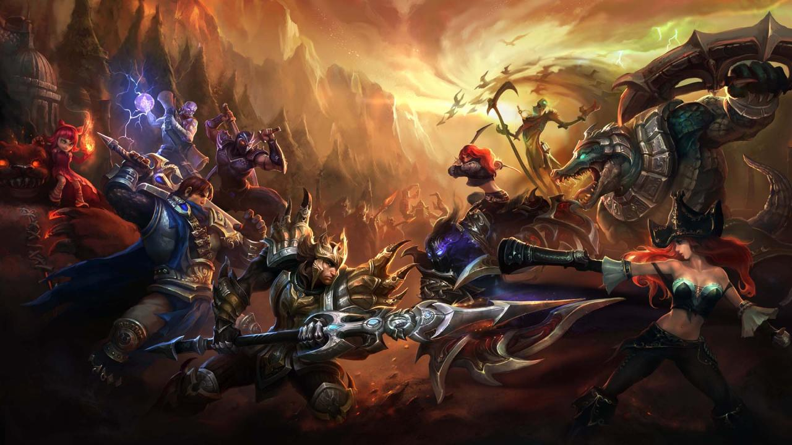

Jest to sieciowa gra komputerowa z gatunku multiplayer online battle arena. Powstała na bazie modyfikacji Defense of the Ancients (DotA) do Warcraft III: The Frozen Throne. Opracowana przez firmę Riot Games i początkowo wydana tylko dla systemu Windows. Została zapowiedziana 7 października 2008, a wydana 27 października 2009. 15 lipca 2013 gra została uznana w USA za pełnoprawny sport.

Rysunek przedstawia tylko niewielką część postaci z tej gry